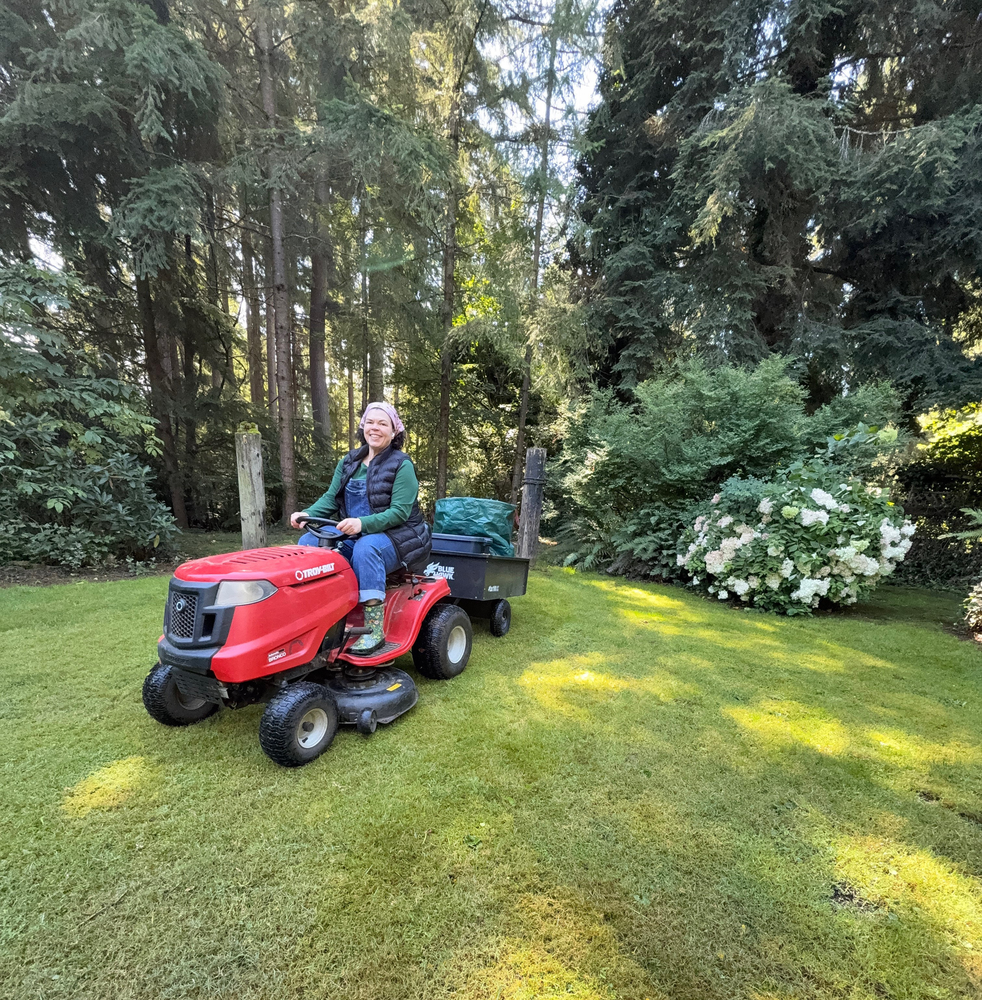

Heather
A celebration of family, gardening, creativity, and the things that make a house a home.
Learn More About HeatherWelcome
Welcome to Heather's bioSite. This site highlights the people, hobbies, and interests that make her life meaningful.
A Life Rooted in What Matters
Heather's story is shaped by family, creativity, growth, and a strong connection to home. From creating beautiful outdoor spaces to spending time with the people she loves, the things that matter most to her can be found in the everyday moments she has built around her.
Explore Her Interests
Gardening, home projects, and time outdoors are a few of the interests that have become meaningful parts of Heather's life.
Explore Hobbies